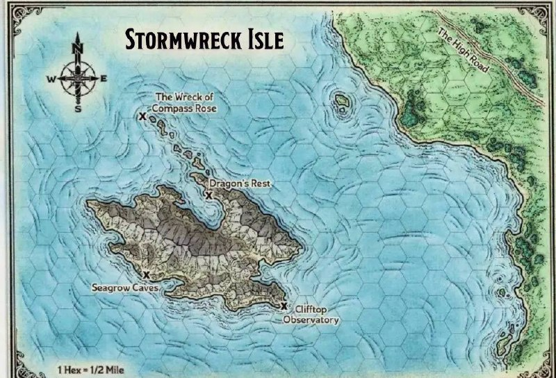
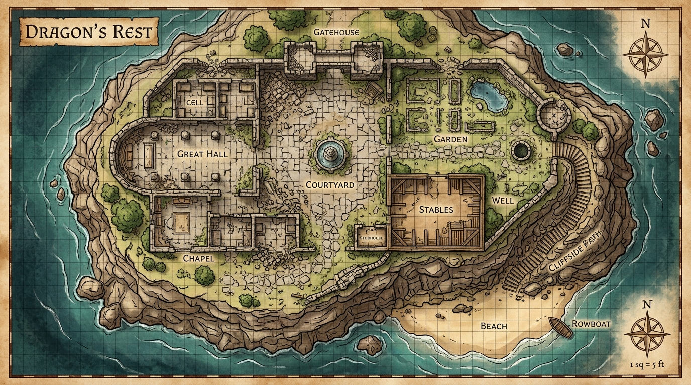
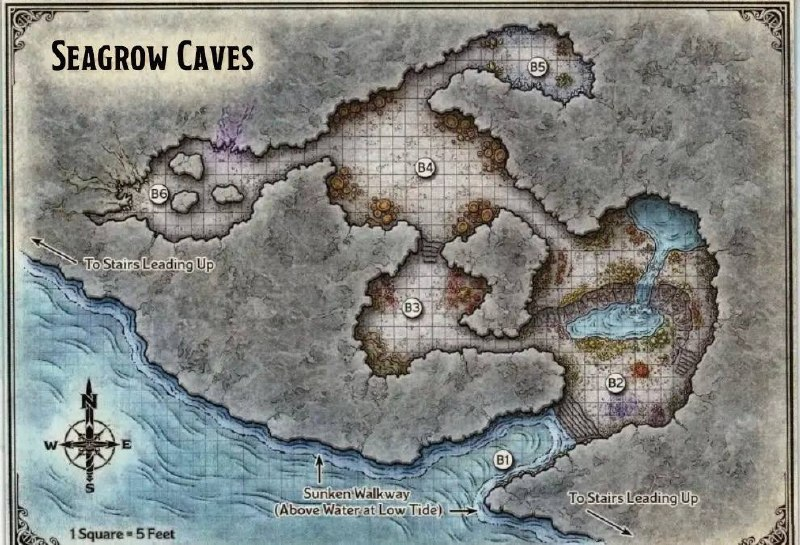
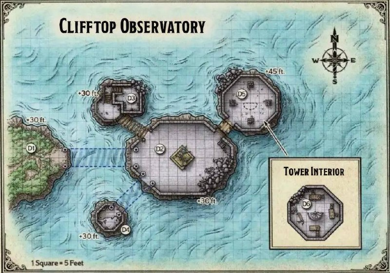
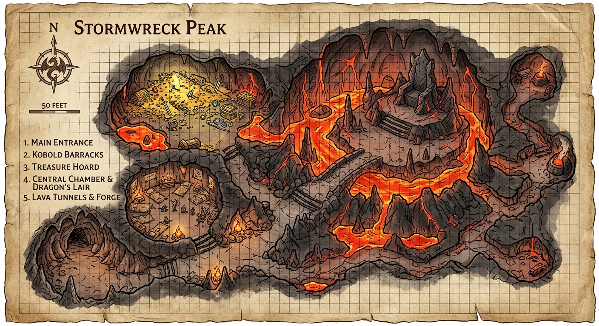

🐉 Dragons of Stormwreck Isle
📖 Adventure Summary
For centuries, a magical barrier has kept the dragons of Stormwreck Isle separated and at peace. When that barrier shatters, three dragons — each with their own goals — are thrust into conflict. The players must navigate the chaos, uncover the truth, and decide the fate of the island.
The adventure begins at Dragon's Rest, a monastery refuge, and unfolds across five key locations on the island.
🎭 What's Happening
Sparkrender (adult blue dragon) broke the barrier and now rules from Stormwreck Peak. Runara (bronze dragon in disguise) maintains what's left of the barrier from Dragon's Rest. Aidron (her son) has gone missing after a confrontation with Sparkrender.
The party must discover why the barrier fell, deal with each dragon, and decide the island's future.
🎲 Starting the Adventure
The characters begin at Dragon's Rest, having arrived by ship. They meet the elderly monk Runara and her acolytes. Soon after arrival, Aidron crashes near the monastery, wounded and hunted by kobolds.
⚡ Quick Reference
| Dragon | Type | HP | AC | Location |
|---|---|---|---|---|
| Sparkrender | Adult Blue | 120* | 19 | Stormwreck Peak |
| Runara | Adult Bronze | 212 | 19 | Dragon's Rest |
| Aidron | Young Bronze | 142 | 18 | Missing |
* Sparkrender is weakened from breaking the barrier. Full adult blue dragon: 212 HP, AC 19.
🐉 The Three Dragons
The fate of Stormwreck Isle rests on these three draconic powers.
⚡ Sparkrender
Sparkrender is an ancient and arrogant blue dragon who grew tired of the enforced peace. He discovered a weakness in the barrier and shattered it, then claimed Stormwreck Peak as his lair. The effort of breaking the barrier left him significantly weakened.
Personality: Arrogant, domineering, dismissive of "lesser" creatures. Believes the barrier was a cage and that he's doing the island a favor by ruling it. Will negotiate but only from a position of (perceived) strength.
DM Tip: Play Sparkrender as condescending rather than immediately hostile. He's curious about why these small creatures would dare approach him. His reduced HP means combat is viable but still dangerous — use his Lightning Breath (recharge 5-6) to keep the party on their toes.
Treasure: 1,200 gp, potion of healing, spell scroll of chromatic orb, dragon-slayer arrow.
🛡️ Runara
Runara has lived for centuries in the guise of an elderly monk at Dragon's Rest. She created and maintained the barrier that kept peace among the dragons. Now that Sparkrender has broken it, she works tirelessly to restore it — but she grows weaker with each passing day.
Personality: Patient, contemplative, guarded. She presents as a frail old monk named Brother Runara. She doesn't reveal her true nature easily — the party must earn her trust. She genuinely cares for her followers and her son.
DM Tip: Runara is a quest-giver and information source, not a combatant (unless the party forces it). She knows the island's history and can guide the party toward the Clifftop Observatory to learn about the barrier. Have her drop cryptic hints about Aidron's whereabouts.
🌊 Aidron
Runara's son, Aidron is young, impulsive, and eager to prove himself. When the barrier broke, he charged headlong at Sparkrender without a plan — and was soundly defeated. He now lies wounded near Dragon's Rest, rescued by kobolds who serve Sparkrender.
Personality: Brash, earnest, ashamed of his failure. He desperately wants to redeem himself and defeat Sparkrender. Can become a valuable ally if the party treats him well.
DM Tip: Aidron's arrival scene is the adventure's first big moment — describe him crashing through trees, wounded and gasping. He can provide information about Sparkrender's lair and the kobold tunnels. Consider having him accompany the party for part of the adventure.
Motivation: Prove himself to his mother and defeat Sparkrender.
🗺️ Locations
Five key locations on Stormwreck Isle. Suggested order: Dragon's Rest → Seagrow Caves → Wreck of Compass Rose → Clifftop Observatory → Stormwreck Peak.
🏛️ Dragon's Rest
Key Encounters
Aidron's crash-landing (opening scene), meeting Runara, kobold scouts prowling the outskirts, possible attacks from Sparkrender's minions.
NPCs
Runara — elderly monk (see Dragons), Tarak — half-elf groundskeeper, Varnoth — dwarf cook, Mirtales — gnome scholar.
Treasure
Healing potions in the infirmary, a +1 weapon hidden in the crypts beneath the monastery.
DM Tips
This is the party's home base. Describe the sounds of waves and the smell of salt air. Runara can provide quest hooks and healing between expeditions. The crypts beneath hold lore about the barrier's origin.
🦀 Seagrow Caves
Key Encounters
Myconid greeting (peaceful), harpies nesting in the upper caves, a sea spawn ambush in the tidal pools, a hidden shrine to an ancient sea god.
NPCs
Myconid Sovereign — leader of the fungus folk, Harpy Matron — vicious but can be bribed with shiny objects.
Treasure
Moonstone (50 gp), potion of water breathing, ancient pearl worth 100 gp.
DM Tips
Myconids communicate via spores — play up the alien nature of this interaction. Harpies can be RP opportunity: they love gossip and might know about shipwrecks. The sea caves connect to the Wreck via underwater passages.
⚓ Wreck of the Compass Rose
Key Encounters
Kobold scavengers (4-6), a rust monster in the cargo hold, the ship's ghost (former captain), a locked treasure chest with a poison needle trap.
NPCs
Kobold Boss — clever little leader, Captain's Spirit — restless ghost who needs closure.
Treasure
Spell scroll of thunderwave, 200 gp in trade goods, captain's logbook (clues about the barrier), potion of climbing.
DM Tips
This location shines with verticality — the ship has three levels (deck, cabins, cargo hold). Kobolds use hit-and-run tactics. The ghost encounter can be roleplay-heavy: the captain wants his remains returned to his family.
🔭 Clifftop Observatory
Key Encounters
Magical traps (ancient wards), a guardian construct (clay golem or animated armor), a spectral dragon scholar, scrolls containing barrier lore.
NPCs
Spectral Scholar — ghost of the last barrier keeper, Stone Guardian — constructs that animate if disturbed.
Treasure
Spell scroll of identify, barrior restoration notes, +1 wand of the war mage, 50 gp in ancient coins.
DM Tips
The observatory is the adventure's lore dump. The spectral scholar can answer questions about the barrier's origin, why it broke, and how to repair it. Consider making the puzzles here thematic — constellations, dragon lore, elemental resonance.
⛰️ Stormwreck Peak
Key Encounters
THE FINAL BATTLE: Sparkrender himself. Kobold guards (6-8) in the approach tunnels. Lightning traps. A crumbling bridge over a chasm. Crystal formations that conduct lightning.
NPCs
Sparkrender (see Dragons section), Kobold Shaman — serves the blue dragon, can cast thunderwave.
Treasure
Sparkrender's hoard: 1,200 gp, dragon-slayer arrow, potion of healing, spell scroll of chromatic orb, blue dragon scale (valuable reagent).
DM Tips
Make the ascent feel epic. Each phase of the climb should reveal more of the storm-wreathed peak. The lair has tactical advantages — Sparkrender can use lightning to his benefit. If the party negotiates, consider non-combat resolution: maybe Sparkrender can be convinced to leave if the barrier is restored and he's given a new territory.
🗺️ Suggested Adventure Flow
🏁 Dragon's Rest (arrival + Aidron) →
🦀 Seagrow Caves (myconids + harpies) →
⚓ Wreck of Compass Rose (kobolds + ghost) →
🔭 Clifftop Observatory (lore + barrier secrets) →
⛰️ Stormwreck Peak (Sparkrender showdown) 🏆
🗺️ Maps of Stormwreck Isle
Click any map to view full-screen. Use for planning encounters and sharing with players.





👥 NPC Index
Runara (Brother Runara)
Tarak
Varnoth
Mirtales
Myconid Sovereign
Myconids (colony)
Harpy Matron + Harpies
Kobolds (various)
Sparkrender
Aidron
⚔️ Encounters by Location
Organized by location with CR, monsters, tactics, and treasure.
🏛️ Dragon's Rest
| Encounter | CR | Monsters | Treasure |
|---|---|---|---|
| Aidron's Crash | — | Cinematic scene | — |
| Kobold Scouts | 1/4 | 2 kobolds + 1 winged kobold | 4 sp each |
| Crypt Guardians | 2 | 2 skeletons + 1 specter | +1 weapon |
| Night Ambush | 1 | 3 kobolds + 1 swarm of rats | — |
Tactics: Kobold scouts use hit-and-run. Crypt guardians rise from sarcophagi when disturbed. Night ambush occurs if party rests outside without guard.
🦀 Seagrow Caves
| Encounter | CR | Monsters | Treasure |
|---|---|---|---|
| Myconid Greeting | 0 | 2 myconid adults | Information |
| Harpy Nest | 1 | 3 harpies | 50 gp, moonstone |
| Sea Spawn | 1 | 2 sea spawn | Ancient pearl (100 gp) |
| Tidal Trap | — | Environmental (rising water) | — |
Tactics: Myconids are peaceful but can spore-stun if threatened. Harpies use Luring Song to draw characters into water. Sea spawn ambush from tidal pools.
⚓ Wreck of the Compass Rose
| Encounter | CR | Monsters | Treasure |
|---|---|---|---|
| Kobold Scavengers | 1/2 | 4 kobolds (deck) | Trade goods, 30 gp |
| Rust Monster | 1/2 | 1 rust monster (cargo hold) | — |
| Captain's Ghost | 4 | 1 specter (captain's quarters) | Spell scroll (thunderwave) |
| Poison Chest | — | Trap (DC 12 poison needle) | Potion of climbing |
| Kobold Boss | 1 | 1 kobold boss + 2 kobolds | Captain's logbook, 200 gp |
Tactics: Kobolds attack from above (rigging, crow's nest). Rust monster targets metal weapons — dramatic moment. Captain's ghost can be resolved peacefully if the party listens to his story.
🔭 Clifftop Observatory
| Encounter | CR | Monsters | Treasure |
|---|---|---|---|
| Arcane Wards | — | Magical traps (fire/lightning) | — |
| Guardian Construct | 2 | 1 animated armor + 1 flying sword | — |
| Spectral Scholar | — | Ghost (peaceful encounter) | Barrier knowledge |
| Laboratory | — | Puzzle: align constellations | +1 wand, scroll (identify) |
Tactics: Arcane wards can be disabled with Arcana checks (DC 13). The guardian construct animates only if the party attacks. The spectral scholar wants to share knowledge, not fight.
⛰️ Stormwreck Peak
| Encounter | CR | Monsters | Treasure |
|---|---|---|---|
| Kobold Tunnel Guards | 1/2 | 4 kobolds + traps | — |
| Lightning Traps | — | Environment (conductive crystals) | — |
| Broken Bridge | — | Skill challenge (Acrobatics DC 12) | — |
| Kobold Shaman | 2 | 1 kobold shaman + 2 kobolds | — |
| ⚡ SPARKRENDER | ~8 | 1 adult blue dragon (weakened) | 1,200 gp, magic items |
Tactics: Sparkrender uses the environment to his advantage — lightning strikes, crumbling ledges, crystal shards. He's arrogant but smart: if reduced to 30 HP, he may try to negotiate or flee. The kobold shaman can cast thunderwave to push characters off ledges.
✨ Magic Items
All known magic items available in the adventure.
+1 Weapon
Hidden in the crypts beneath Dragon's Rest. A finely-crafted blade (or other weapon) that grants a +1 bonus to attack and damage rolls. Choose a weapon suited to a party member.
Potion of Healing
Restores 2d4+2 hit points. Several are scattered throughout the adventure — the infirmary at Dragon's Rest has 3, and one is in Sparkrender's hoard.
Spell Scrolls
Chromatic Orb — Sparkrender's hoard. 3rd-level evocation. Deals 3d8 damage (choose type).
Thunderwave — Wreck of Compass Rose. 1st-level evocation. 2d8 thunder damage in 15-ft cube.
Identify — Clifftop Observatory. 1st-level divination.
Dragon-Slayer Arrow
A single arrow with a scale of a bronze dragon fletching. When used against a dragon, it deals an extra 6d10 damage. Found in Sparkrender's hoard — delicious dramatic irony.
+1 Wand of the War Mage
Found in the Clifftop Observatory laboratory. Grants +1 bonus to spell attack rolls. Ignore half cover when making ranged spell attacks.
Potion of Climbing
Grants a climbing speed equal to walking speed for 1 hour. Found in the locked chest on the Wreck of Compass Rose.
Potion of Water Breathing
Grants the ability to breathe underwater for 1 hour. Found in the Seagrow Caves behind an underwater waterfall.
🛠️ DM Tools
Interactive tools to run your session smoothly. Data persists in your browser.
⚔️ Initiative Tracker
🎲 Dice Roller
🌊 Random Encounter
Generate a random encounter for Stormwreck Isle.
📝 DM Notes
Session notes, initiative reminders, plot hooks — write freely. Auto-saved.
😴 Rest Tracker
Track how many short and long rests the party has taken.